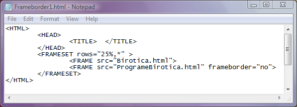
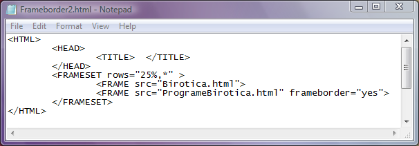

Atributul frameborder
Atributul frameborder poate avea doar doua valori:
a)frameborder="yes" fapt care presupune faptul ca acel cadru va avea chenar. Aceasta este de fapt
setarea implicita, adica, daca nu este setat atributul frameborder, atunci cadrul va avea chenar.
b)frameborder="no" fapt care presupune ca acel cadru nu are chenar.
Pentru comparatie, iata mai jos codul unei pagini web cu doua cadre dintre care al doilea
nu are chenar:
Click pe cod pentru a deschide pagina web...

Iata acum codul pentru aceeasi pagina web, de data aceasta si cel de al doilea cadru avand chenar.

Inapoi la Cadre...